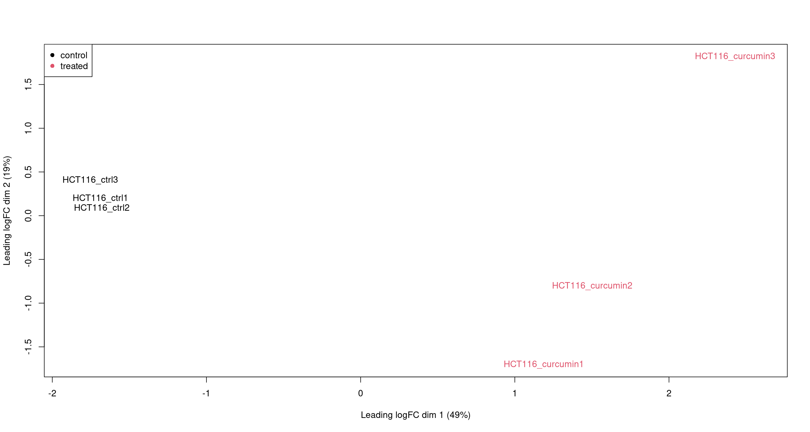
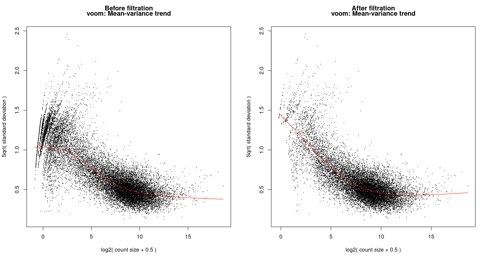
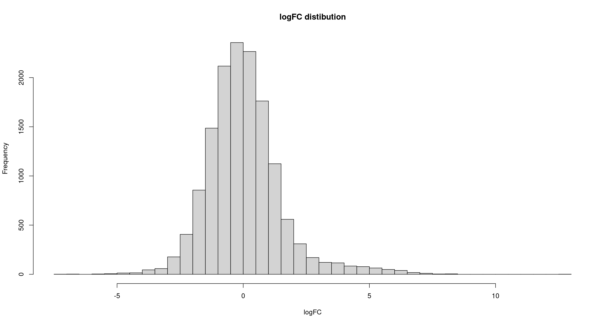
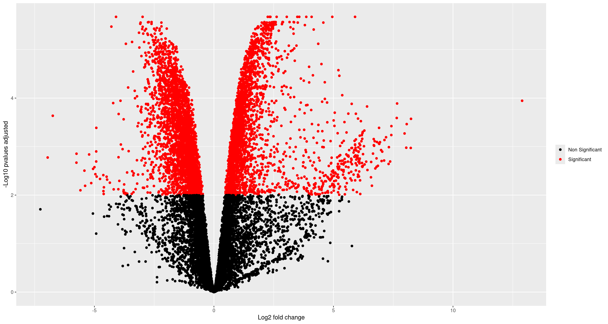
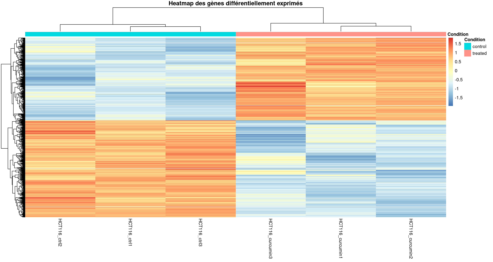
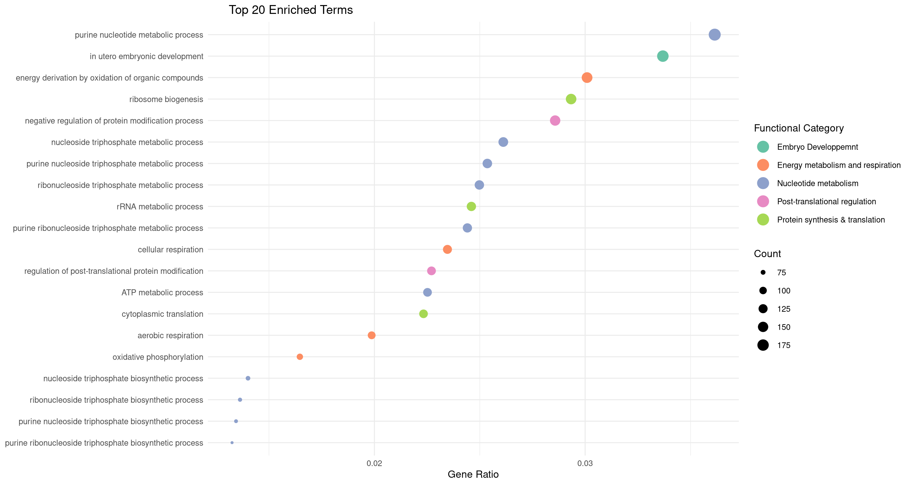

rm(list = objects())
graphics.off()
set.seed(2002)Analyse d’expression différentielle
1 - Session preparation
1.1 - Cleaning up the environnment
1.2 - Loading Packages
library(edgeR) Le chargement a nécessité le package : limmalibrary(limma)
library(dplyr)
Attachement du package : 'dplyr'Les objets suivants sont masqués depuis 'package:stats':
filter, lagLes objets suivants sont masqués depuis 'package:base':
intersect, setdiff, setequal, unionlibrary(ggplot2)
library(pheatmap)
library(clusterProfiler) clusterProfiler v4.17.0 Learn more at https://yulab-smu.top/contribution-knowledge-mining/
Please cite:
T Wu, E Hu, S Xu, M Chen, P Guo, Z Dai, T Feng, L Zhou, W Tang, L Zhan,
X Fu, S Liu, X Bo, and G Yu. clusterProfiler 4.0: A universal
enrichment tool for interpreting omics data. The Innovation. 2021,
2(3):100141
Attachement du package : 'clusterProfiler'L'objet suivant est masqué depuis 'package:stats':
filterlibrary(org.Hs.eg.db)Le chargement a nécessité le package : AnnotationDbiLe chargement a nécessité le package : stats4Le chargement a nécessité le package : BiocGenericsLe chargement a nécessité le package : generics
Attachement du package : 'generics'L'objet suivant est masqué depuis 'package:dplyr':
explainLes objets suivants sont masqués depuis 'package:base':
as.difftime, as.factor, as.ordered, intersect, is.element, setdiff,
setequal, union
Attachement du package : 'BiocGenerics'L'objet suivant est masqué depuis 'package:dplyr':
combineL'objet suivant est masqué depuis 'package:limma':
plotMALes objets suivants sont masqués depuis 'package:stats':
IQR, mad, sd, var, xtabsLes objets suivants sont masqués depuis 'package:base':
anyDuplicated, aperm, append, as.data.frame, basename, cbind,
colnames, dirname, do.call, duplicated, eval, evalq, Filter, Find,
get, grep, grepl, is.unsorted, lapply, Map, mapply, match, mget,
order, paste, pmax, pmax.int, pmin, pmin.int, Position, rank,
rbind, Reduce, rownames, sapply, saveRDS, table, tapply, unique,
unsplit, which.max, which.minLe chargement a nécessité le package : BiobaseWelcome to Bioconductor
Vignettes contain introductory material; view with
'browseVignettes()'. To cite Bioconductor, see
'citation("Biobase")', and for packages 'citation("pkgname")'.Le chargement a nécessité le package : IRangesLe chargement a nécessité le package : S4Vectors
Attachement du package : 'S4Vectors'L'objet suivant est masqué depuis 'package:clusterProfiler':
renameLes objets suivants sont masqués depuis 'package:dplyr':
first, renameL'objet suivant est masqué depuis 'package:utils':
findMatchesLes objets suivants sont masqués depuis 'package:base':
expand.grid, I, unname
Attachement du package : 'IRanges'L'objet suivant est masqué depuis 'package:clusterProfiler':
sliceLes objets suivants sont masqués depuis 'package:dplyr':
collapse, desc, slice
Attachement du package : 'AnnotationDbi'L'objet suivant est masqué depuis 'package:clusterProfiler':
selectL'objet suivant est masqué depuis 'package:dplyr':
selectlibrary(enrichplot) enrichplot v1.29.1 Learn more at https://yulab-smu.top/contribution-knowledge-mining/
Please cite:
T Wu, E Hu, S Xu, M Chen, P Guo, Z Dai, T Feng, L Zhou, W Tang, L Zhan,
X Fu, S Liu, X Bo, and G Yu. clusterProfiler 4.0: A universal
enrichment tool for interpreting omics data. The Innovation. 2021,
2(3):100141library(forcats)1.3 - Global parameters
pvalue_tresh = 0.01
input_dir = "./Data/Input/"
output_dir = "./Data/Output/"1.4 - Loading Data
gene_counts = read.table(paste0(input_dir, "./GSE229613_gene_count_1.txt"), header = TRUE)
rownames(gene_counts) = gene_counts$gid
gene_counts$gid = NULL
gene_counts$gname = NULL2 - Differential Gene Expression Analysis
2.1 - Data Preparation
group <- factor(c("control", "control", "control", "treated", "treated", "treated"))
mm <- model.matrix(~0 + group)
dge <- DGEList(counts = gene_counts)
dge <- calcNormFactors(dge, method = "TMM")
plotMDS(dge, col = as.numeric(group))
legend("topleft", legend = levels(group), col = 1:length(levels(group)), pch = 16)
2.2 - Genes Filtration
cutoff <- 1
drop <- which(apply(cpm(dge), 1, max) < cutoff)
dge_filtered <- dge[-drop,]
message(paste0( length(drop)," Genes were filtered ", "\n", dim(dge_filtered)[1], " Genes are left" ))20788 Genes were filtered
14318 Genes are leftpar(mfrow = c(1,2))
y <- voom(dge, mm, plot = TRUE)
title("Before filtration", line = 2.5 )
y_filtered <- voom(dge_filtered, mm, plot = TRUE)
title("After filtration", line = 2.5)
par(mfrow = c(1,1))2.3 - Model fitting
fit <- lmFit(y_filtered, mm)
contr <- makeContrasts(grouptreated - groupcontrol , levels = colnames(coef(fit)))
tmp <- contrasts.fit(fit, contr)
tmp <- eBayes(tmp)
deg.table <- topTable(tmp, sort.by = "P", n = Inf)
deg.filtered <- deg.table[(which(deg.table$adj.P.Val < pvalue_tresh)),]
hist(deg.table$logFC, breaks = 50, main = "logFC distibution", xlab = "logFC")
2.4 -DEG Analysis
Volcano plot
x = deg.table$logFC
y = -log10(deg.table$adj.P.Val)
pvalues = deg.table$adj.P.Val
ggplot(data = as.data.frame(cbind(x,y)),
mapping = aes(x,
y,
color = ifelse(!is.na(pvalues) & pvalues > pvalue_tresh,
"Non Significant",
"Significant")))+
geom_point()+
scale_color_manual(values = c("Non Significant" = "black", "Significant" = "red"),
name = NULL) +
xlab("Log2 fold change") +
ylab("-Log10 pvalues adjusted")
Clustering
genes_deg_id <- rownames(deg.filtered)
expr_mat <- y_filtered$E[genes_deg_id, ]
expr_scaled <- t(scale(t(expr_mat)))
annotation <- data.frame(Condition = group)
rownames(annotation) <- colnames(expr_scaled)
pheatmap(expr_scaled,
annotation_col = annotation,
show_rownames = FALSE,
clustering_distance_rows = "euclidean",
clustering_distance_cols = "euclidean",
clustering_method = "complete",
main = "Heatmap des gènes différentiellement exprimés")
Statistics
summary(deg.filtered) logFC AveExpr t P.Value
Min. :-6.95440 Min. :-3.294 Min. :-18.0282 Min. :3.000e-10
1st Qu.:-1.37728 1st Qu.: 3.491 1st Qu.: -5.7015 1st Qu.:1.344e-05
Median :-0.74547 Median : 4.779 Median : -3.8452 Median :1.652e-04
Mean : 0.02457 Mean : 4.602 Mean : -0.2759 Mean :6.868e-04
3rd Qu.: 1.18329 3rd Qu.: 6.050 3rd Qu.: 5.4068 3rd Qu.:9.636e-04
Max. :12.89111 Max. :14.462 Max. : 20.9802 Max. :4.152e-03
adj.P.Val B
Min. :2.111e-06 Min. :-2.6268
1st Qu.:1.293e-04 1st Qu.:-0.8518
Median :7.949e-04 Median : 0.9242
Mean :2.019e-03 Mean : 1.6055
3rd Qu.:3.092e-03 3rd Qu.: 3.4789
Max. :9.994e-03 Max. :13.8915 n_deg = dim(deg.filtered)[1]
n_deg_pos = length(which(deg.filtered$logFC > 0))
n_deg_neg = length(which(deg.filtered$logFC < 0))
n_deg[1] 5948n_deg_pos[1] 2733n_deg_neg[1] 32153 - Gene enrichment analysis
3.1 - enrichGo
ORA_res <- enrichGO(gene = genes_deg_id,
OrgDb = org.Hs.eg.db,
keyType = "ENSEMBL",
ont = "BP",
pAdjustMethod = "BH",
qvalueCutoff = pvalue_tresh,
readable = TRUE
)
ORA_res_filtered <- ORA_res
ORA_res_filtered@result <- ORA_res@result[ORA_res@result$qvalue < pvalue_tresh, ]
summary(ORA_res_filtered@result) ID Description GeneRatio BgRatio
Length:476 Length:476 Length:476 Length:476
Class :character Class :character Class :character Class :character
Mode :character Mode :character Mode :character Mode :character
RichFactor FoldEnrichment zScore pvalue
Min. :0.3115 Min. :1.254 Min. : 3.263 Min. :0.000e+00
1st Qu.:0.3714 1st Qu.:1.495 1st Qu.: 3.746 1st Qu.:2.946e-06
Median :0.4063 Median :1.636 Median : 4.089 Median :7.342e-05
Mean :0.4334 Mean :1.745 Mean : 4.507 Mean :1.954e-04
3rd Qu.:0.4661 3rd Qu.:1.876 3rd Qu.: 4.864 3rd Qu.:2.989e-04
Max. :0.8000 Max. :3.221 Max. :11.725 Max. :8.934e-04
p.adjust qvalue geneID Count
Min. :0.0000000 Min. :0.0000000 Length:476 Min. : 8.00
1st Qu.:0.0001605 1st Qu.:0.0001306 Class :character 1st Qu.: 35.00
Median :0.0020091 Median :0.0016346 Mode :character Median : 61.00
Mean :0.0034004 Mean :0.0027665 Mean : 67.13
3rd Qu.:0.0054609 3rd Qu.:0.0044429 3rd Qu.: 92.00
Max. :0.0122481 Max. :0.0099649 Max. :191.00 3.2 - Results Vizualisation
top.20.func.cat = c("Protein synthesis & translation",
"Protein synthesis & translation",
"Nucleotide metabolism",
"Nucleotide metabolism",
"Energy metabolism and respiration",
"Nucleotide metabolism",
"Nucleotide metabolism",
"Nucleotide metabolism",
"Protein synthesis & translation",
"Nucleotide metabolism",
"Nucleotide metabolism",
"Energy metabolism and respiration",
"Embryo Developpemnt",
"Energy metabolism and respiration",
"Post-translational regulation",
"Energy metabolism and respiration",
"Nucleotide metabolism",
"Nucleotide metabolism",
"Nucleotide metabolism",
"Post-translational regulation"
)
ORA_res_filtered@result$func.cat <- NA
ORA_res_filtered@result$func.cat[1:20] <- top.20.func.cat
top20 <- ORA_res_filtered@result[1:20, ]
top20$GeneRatio_numeric <- sapply(top20$GeneRatio, function(x) eval(parse(text = x)))
ggplot(top20, aes(x = fct_reorder(Description, GeneRatio_numeric),
y = GeneRatio_numeric,
size = Count,
color = func.cat)) +
geom_point() +
coord_flip() +
scale_color_brewer(palette = "Set2", name = "Functional Category") +
labs(title = " Top 20 Enriched Terms",
x = NULL, y = "Gene Ratio") +
theme_minimal(base_size = 12) +
theme(legend.key.size = unit(1.5, "lines")) +
guides(color = guide_legend(override.aes = list(size = 6))) 